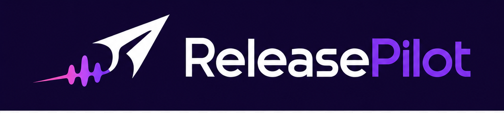

First-Time Setup
Get ReleasePilot ready without touching code.
Choose the artist library, scan the files, check publishing, then enter the dashboard. Optional steps are clearly marked so a new user knows what can wait.
Artist
Name the artist project ReleasePilot will manage. This appears in captions and setup records.
Music
Choose the main folder that contains the albums and audio files.
Artwork Optional
Choose a separate artwork folder only if covers are not already inside album folders.
Scan
Build the local catalog and check what is render-ready.
Meta
Check Instagram, Facebook Page, permissions, and token health before publishing.
Visuals Optional
Check stock visual sources and album theme guidance for the extra atmosphere Shorts.
Automation Optional
Install the quiet startup publisher so due posts are checked after login.
Setup progress
Complete the required steps, then enter the dashboard.

Today
Today's publishing status.
Open the app, check what matters, and take the next action.
Next To Post
Scheduled content will appear here once your publishing plan is ready.
0
tracks loaded
0
albums mapped
0
schedule items
0
ready to post
0
days scheduled
...
Meta token
Latest Posted
Published content will appear here after the next successful upload.
Performance
YouTube stats and learning loop
Sync uploaded Shorts and full videos, then use the local results to decide what visuals, albums, styles, and titles to make more of.
Sync uploaded Shorts and YouTube videos to see what is working.
0
tracked uploads
0
total views
0
average views
Never
last sync
Best Videos
What To Do Next
By Format
By Creative Source
By Visual Type
By Pexels/Search Cue
By Album
By Style
By Instrument
By Description
Upload Detail
Setup
Guided setup checklist
Profile Workspace
Artist profile and connection map
Each profile keeps its own library scan, review queue, schedule, visual source records, and non-secret account IDs. Use this before scanning a second artist library.
Identity
Meta IDs
Storage
YouTube
Profile workspace details save locally and to the backend config when the backend is running.
Library
Connect the local music library
Choose where the audio and artwork live, scan the folders, then connect publishing accounts. The scan saves a renderer-ready catalog automatically.
Artist
Audio folder
Artwork folder
Scan and save
Creates the local catalog used by Generate.
Library Review
Missing assets and scan issues
Meta Setup
Check Instagram/Facebook readiness and account connection details.
YouTube Setup
Reconnect Google OAuth, check credentials, and test YouTube uploads.
Visual Sources
Search and approve stock atmosphere footage for non-artwork Shorts.
Daily Automation
Install or test the startup publisher for hands-off daily checks.
Local User Config
Setup completion and local paths
This file keeps each user's setup separate from the app code. It stores folders, setup completion, posting defaults, and non-secret account settings.
Config path appears after the backend is running.
Daily Automation
Run the publisher in the background
The background publisher checks the saved schedule after login and during the day. Each check publishes anything due, writes a local result, then closes itself.
Startup automation status appears here.
Meta Token Health
Publishing connection
The app checks your token, permissions, Instagram account, and Facebook Page before publishing.
Review
Rendered Reels
Refresh review queue
Reload the saved review list or bring in the newest rendered batch.
Approve or reject
Use the cards below to choose what should be scheduled.
Add to Schedule
Move approved Reels into the publishing timeline.
Continue
Open Schedule to set dates and start publishing.
Open ScheduleGenerate
Create a fresh batch of review-ready Reels
Batch settings
Set batch size, length, fade, and render speed below.
Create batch
Render the next batch, auto-match atmosphere clips from the track theme, and load it into Review.
Review
Move to Review once rendering finishes.
Open ReviewBatch settings
Performance-led preset
Build the next batch from the albums, instruments, visual sources, and search terms that are already doing best in Performance.
Batch status
Progress and completion details appear here after you create a review batch.
Generation guardrails
Album varietyPrioritises one track per album before repeats.
Recent-track cooldownUses the cooldown setting to avoid obvious repeats.
Visual rotationRotates templates so batches feel less samey.
Daily track spreadSchedule fills the 3 Shorts slots with different tracks first, then moves alternate visuals for the same track onto later days.
Animated artworkArtwork Shorts use parallax, cover tilt, reflection, steam, light leaks, grain, and waveform glow without theme text overlays.
Auto stock matchUses track title, album, style, and visual mood to source or pick atmosphere clips from enabled providers.
Mood-matched visualsAtmosphere clips are graded between cafe steam, rainy window, vinyl room, golden hour, noir, bossa, study, and lounge looks.
Human captionsCaptions vary by title, album, mood, and length.
Review safety
Generated videos go through Review before they can be scheduled or published.
Meta / Instagram
Every published Reel is sent to Instagram and the linked Facebook Page.
Caption
Timing
Song Factory
Create Suno-ready song plans
Use this manual workflow now. If you later get official Suno Platform credentials, this section is structured so API generation can be connected cleanly.
Open Suno PlatformThe app avoids unofficial scraping and keeps all plans profile-scoped, so each artist workspace has its own song ideas and metadata.
1. Source And Direction
Build from your catalogue
Choose an existing album lane, set the track count, energy and length, then refine the generated prompt before creating the plan.
2. Generated Plan
No active song plan
3. Save And Import
Attach artwork and finished audio
Saving This Album
No active song plan
Generate or recall a plan to see the album title, mood and final album prompt before saving.
Create a plan, then build it in Suno, save the album, and import the finished artwork/audio here.
Schedule
Ready, due, and next actions
What's ready
Bring approved Reels from Review, then set the dates and times below.
Upload videos
Upload MP4s to R2. After upload, they move into the saved schedule below and the staging list is cleared.
What happens next
It posts one Meta/Instagram Reel per day, while YouTube Shorts can use every scheduled Short slot.
Schedule controls
The active staging queue is only for newly approved Reels. Uploaded videos are saved into the scheduled plan and still publish from here when due.
Maintenance and re-send tools
Final Publishing
No committed publishing timeline yet
Load approved Reels, set their schedule, upload videos, then start the auto publisher.
Album Videos
One-time full album YouTube videos
1. Choose Album
This is separate from daily scheduling. It renders one full-length YouTube video for every track, then automatically creates one combined full-album video with chapters.
2. Render Full-Length Videos
Choose an album, then render the full-track videos and combined album video.
3. Review And Upload
Approve the individual tracks and the full-album compilation you want uploaded. Rejected videos stay local and will not upload.
History
Posting plan and published history
Published History
Reels already posted by ReleasePilot
Local history includes Instagram, Facebook, YouTube Shorts, and YouTube full videos. Meta history checks live Instagram and Facebook posts.
Help
App status and next fix
Checking
Checking the app...
This page explains what is ready, what needs attention, and where to go next.
Recommended next steps
Error report
Exports a safe diagnostics file with recent errors, status checks, and counts. It does not include tokens, app secrets, or R2 keys.
Local storage cleanup
Finds old rendered batches, logs, and legacy manual packages. It keeps recent batches and protects files still referenced by the saved schedule.
Run a preview before cleaning.
Troubleshooting
Backend not running: close the app window and reopen using `ReleasePilot.exe`.
Meta token expired: open Setup > Meta, run Check Meta health, then use the direct fix button for the failed token check.
YouTube not ready: open YouTube setup and add Google OAuth values to the backend `.env` before upload testing.
No Reels ready: Generate a batch, approve Reels in Review, then load them into Schedule.
Uploaded but not posted: check Schedule. The saved plan may be waiting for the due time.
Instagram Setup
Meta API readiness
Quick save Meta tokens
Use the guided connection first. If Meta blocks it, paste fresh Meta values below and ReleasePilot will update the backend `.env` for you.
Connect Meta opens the official Meta approval screen, then saves the long-lived token and Page token locally.
Secrets are written only to the local backend `.env`, not browser storage.
Facebook Page
Meta App
Publishing Mode
Required permissions
Next actions
- Create a Meta Developer App.
- Add Instagram Graph/API publishing capability.
- Connect the Facebook Page and Instagram Creator account.
- Request or test required permissions.
- Build backend token storage before adding real tokens.
Backend environment placeholders
Visual Sources
Stock atmosphere video library
Search stock videos
Stock source status appears here.
Approved source folder
Downloaded clips are stored locally and logged with creator/source/license notes. Create Batch can auto-search enabled stock sources from the track title, album, style, and mood cues when it needs a better atmosphere match for Short 2 or Short 3.
Optional album guidance lives in visual-sources/album-visual-themes.csv. Fill in mood, theme, scene, and search terms there to steer automatic searches per album.
Search results
Download only clips that fit your brand and are safe for commercial reuse under the provider terms.YouTube Setup
Google OAuth and upload readiness
Channel
Upload Defaults
Reconnect Google OAuth
Use this when YouTube says the token has expired or been revoked. If the wrong browser opens, copy the generated link and paste it into Chrome.
Readiness Details
Upload Test
This uses one local rendered Reel to confirm YouTube upload access before the daily schedule uses it.